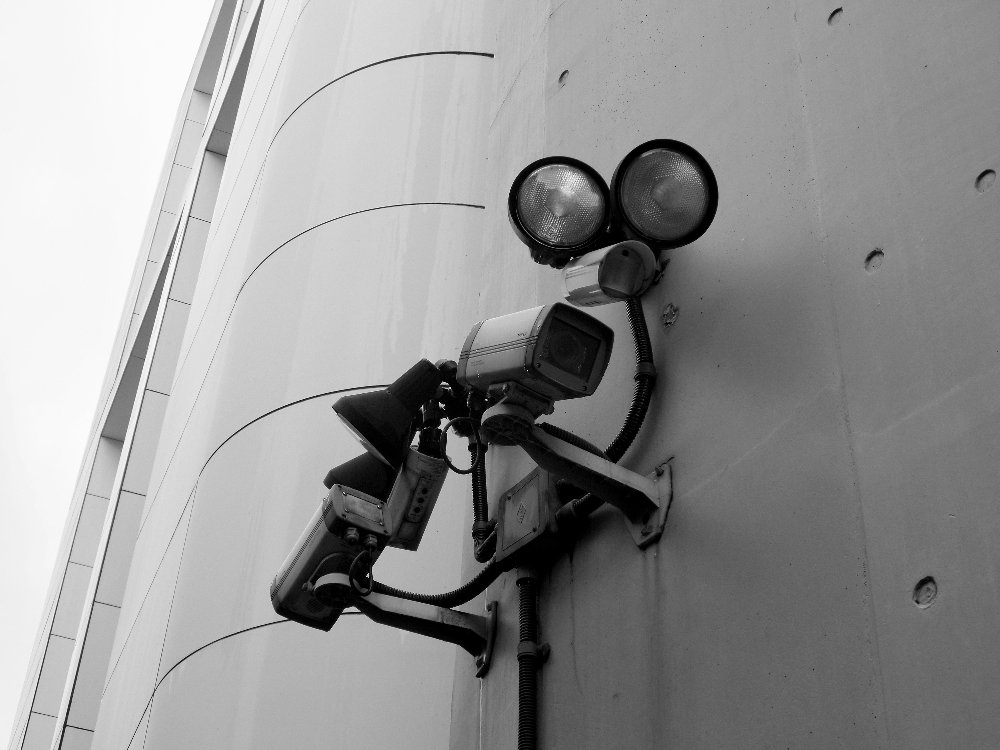
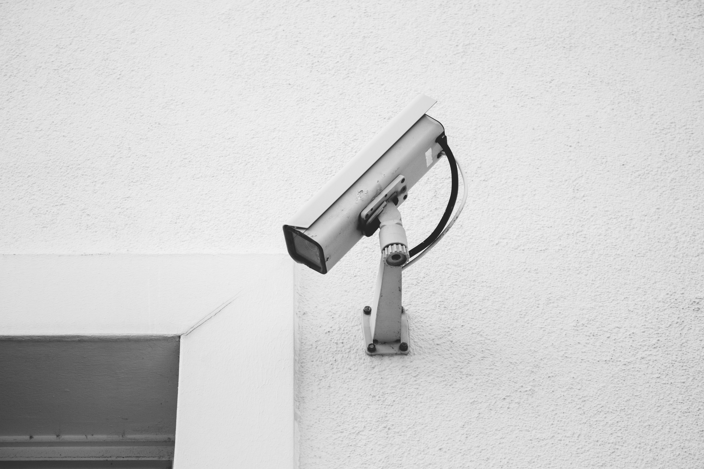

Analog Camera CCTV: Cara Kerja, Kelebihan dan Kekurangan
CCTV analog adalah tipe CCTV yang paling sering Anda lihat dalam kehidupan sehari-hari. Seperti dalam perjalanan ke kantor atau dalam sebuah gedung, kamera ini menjadi salah satu jenis sistem keamanan yang paling banyak digunakan.
Sama seperti jenis CCTV lainnya, CCTV analog ini memiliki kelebihan, kekurangan, dan juga fitur-fitur yang ekslusif terhadap dirinya. Apa saja itu? Yuk disimak pada artikel FMQ CCTV ini yang membahas mengenai cara kerja, kelebihan dan kekurangan CCTV analog.
Pengertian dan Cara Kerja Analog Camera CCTV

CCTV Analog adalah CCTV yang menggunakan kabel coaxial dan tidak menggunakan kabel data yang nantinya akan terhubung dengan jaringan internet. Ia juga menggunakan sinyal analog yang ditranskripkan melaui sistem DVR.
Proses instalasinya juga lebih gampang dibandingkan proses instalasi CCTV IP, tidak memerlukan pemahaman teknis atau IT yang tinggi untuk melakukan sebuah instalasi. Karena Anda hanya perlu menarik kabel coaxial dan power kamera.
Setelah itu, Anda perlu memasang kamera pada posisinya, menyalakannya, lalu memasukan output kamera ke DVR atau ke monitor. Dari situ, hasil video kamera CCTV dapat langsung Anda lihat baik secara real-time atau dengan hasil rekamannya yang sudah di save pada sistem.
Walau DVR akan memproses sinyal yang diberikan oleh rekaman lagi secara digital, tetapi sistem tersebut tetap disebut dengan CCTV analog.
Kemudahan dalam instalasi ini menjadikan CCTV analog sebagai kamera yang paling sering digunakan oleh mayoritas orang. Walaupun DVR terkoneksi dengan 8, 12, 16, atau 24 kamera lebih, instalasi yang mudah membuat hal tersebut menjadi maintenance jadi jauh lebih gampang.
CCTV analog pada sebuah sistem juga memerlukan semacam ID atau identification yang unik padanya. ID ini berbentuk sebuah IP Address perlu direncanakan per kamera dari awal. Anda kemungkinan juga perlu seseorang yang memiliki pengetahuan bagian jaringan komputer.
Kelebihan Analog Camera CCTV
- Harga yang jauh lebih murah dibandingkan dengan CCTV IP
CCTV analog memiliki harga yang jauh lebih terjangkau dibandingkan CCTV IP. Hal ini membuatnya cocok untuk pengguna dengan anggaran terbatas. Biaya pemasangan dan perawatannya juga lebih ekonomis.
- Konfigurasi peralatan yang mudah
Proses konfigurasi perangkat CCTV analog sangat sederhana. Pengguna hanya perlu menghubungkan kabel sesuai petunjuk. Tidak diperlukan langkah pengaturan rumit untuk menjalankannya.
- Tidak Bergantung pada Jaringan Internet
CCTV analog tidak bergantung pada koneksi internet, sehingga tetap berfungsi tanpa jaringan. Ini membuatnya ideal untuk area tanpa akses internet. Selain itu, tidak ada kekhawatiran akan kehabisan bandwidth.
- Kualitas gambar yang kelihatan “real”
Kualitas gambar CCTV analog terlihat lebih natural dan tidak terlalu diproses. Gambar yang dihasilkan menyerupai tampilan langsung di dunia nyata. Ini memberikan kesan autentik saat dilihat.
- Memiliki banyak variasi baik dari kamera, DVR dan peralatan mendukung lainnya
CCTV analog menawarkan banyak variasi produk, mulai dari jenis kamera hingga DVR. Pilihannya fleksibel untuk berbagai kebutuhan pengguna. Selain itu, aksesoris pendukungnya juga mudah ditemukan.
Kekurangan Analog Camera CCTV

-
Memakai lebih banyak kabel untuk instalasi karena membutuhkannya untuk power, video, dan data
CCTV analog membutuhkan lebih banyak kabel untuk instalasi dibandingkan CCTV IP. Kabel terpisah diperlukan untuk power, video, dan data. Hal ini membuat pemasangan menjadi lebih kompleks dan memakan waktu.
-
Gampang dipengaruhi oleh frekuensi-frekuensi noise dan interferensi
Sistem CCTV analog rentan terhadap noise dan interferensi dari frekuensi lain. Gangguan ini dapat memengaruhi kualitas video yang dihasilkan. Oleh karena itu, pemilihan lokasi kabel harus lebih hati-hati.
-
Peralatan yang diperlukan untuk melakukan integrasi sistem jauh lebih banyak
Untuk mengintegrasikan sistem CCTV analog, diperlukan banyak peralatan tambahan. Hal ini termasuk splitter, amplifier, atau converter. Komponen tambahan ini bisa membuat biaya instalasi meningkat.
-
Harga kabel coaxial dan connector BNC lebih mahal ketimbang kabel yang digunakan untuk CCTV IP
Kabel coaxial dan konektor BNC yang digunakan CCTV analog memiliki harga lebih tinggi. Dibandingkan kabel UTP pada CCTV IP, biaya instalasi kabel ini lebih besar. Faktor ini perlu diperhitungkan dalam anggaran pemasangan.
-
Kerapian dalam memasang kabel sangat rumit apalagi kalau memasang CCTV di banyak titik
Pemasangan kabel CCTV analog membutuhkan perhatian ekstra untuk menjaga kerapian. Semakin banyak titik kamera, semakin sulit pengaturan kabelnya. Hal ini terutama menantang jika harus menyembunyikan kabel di lokasi tertentu.
CCTV analog merupakan jenis CCTV yang paling umum digunakan karena harganya terjangkau, pemasangan mudah, dan tidak bergantung pada jaringan internet. Meski memiliki kelebihan seperti kualitas gambar natural dan banyak variasi produk, sistem ini memiliki kekurangan, seperti penggunaan banyak kabel, rentan terhadap interferensi, serta instalasi yang rumit untuk menjaga kerapian.